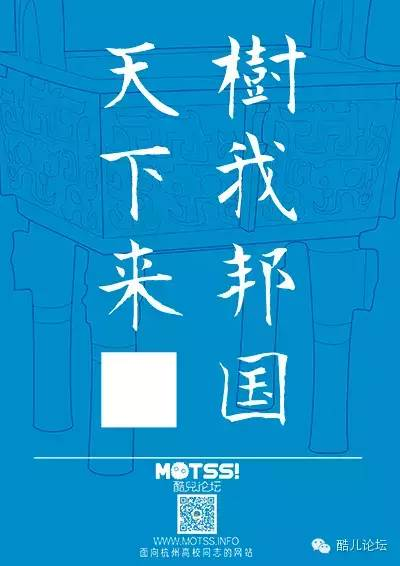
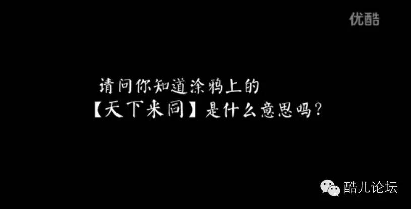
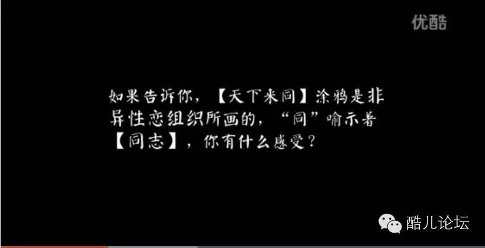
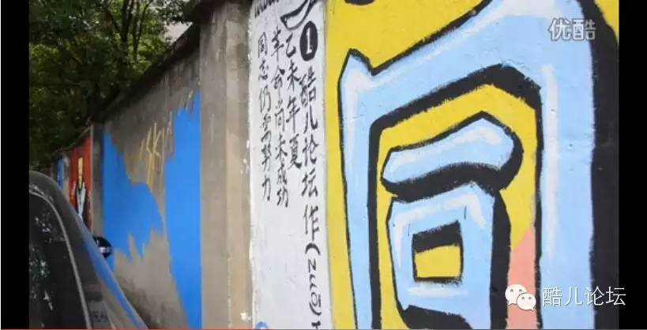
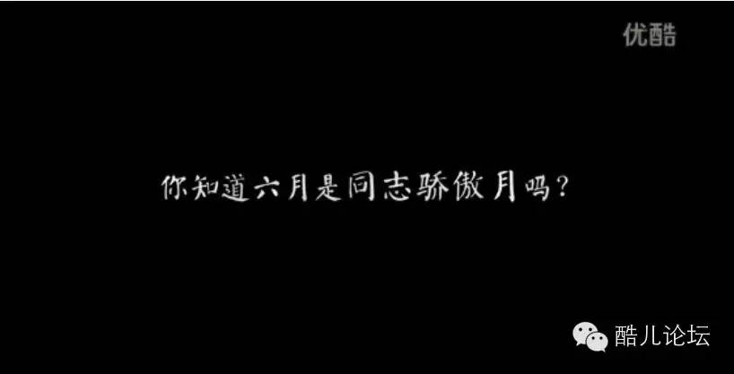
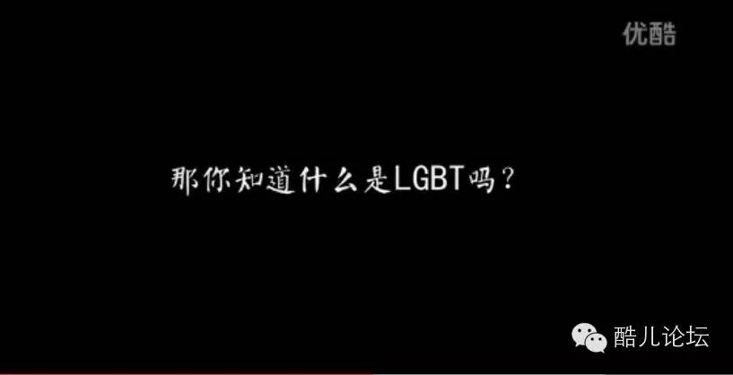
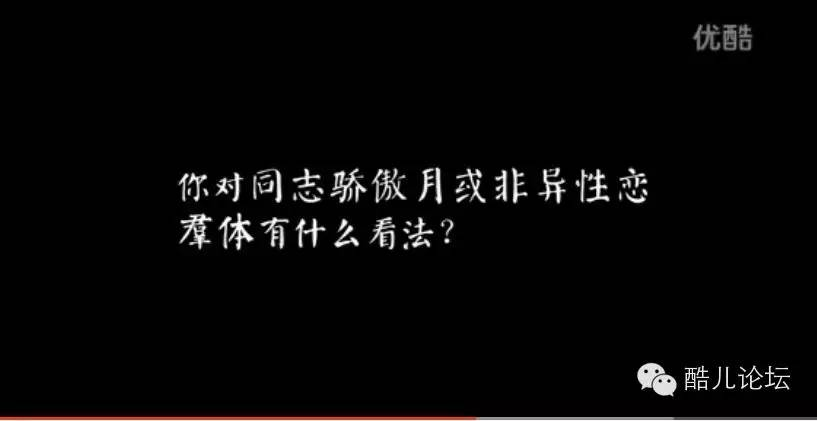

看到“天下来同”浙大学生会想到什么？
看 到

浙大学生会想到什么？
酷儿论坛
www.motss.info
每一个浙大学生入学，都会先被“大不自多，海纳江河”洗脑一番，最近知乎上“洗脑校歌”的话题更是被浙大学生占领。那各位浙大的同学，在一次次无意识地校歌循环中，有木有想过最后一句“天下来同”也可以有不同的解读呢？~

去掉了“同”以后，你是否想到了别的东西？
2015年6月，酷儿论坛的一群小伙伴在浙大紫金港北街进行了同志骄傲节下沙涂鸦活动的试涂活动，内容就是“天下来同”四字（可在主菜单点击“推荐阅读”-“骄傲涂鸦”查看）。
一群浙大新闻专业的小伙伴当天全程进行了拍摄，并在事后采访了许多浙大的小伙伴，看看他们对涂鸦内容的看法~请在wifi条件下观看哦：

看来大家都对校歌耳熟而详嘛……

hhhhhhh知道真相的我眼泪掉下来，原来还可以这样玩？

穿着学士服的学长还免费给论坛做了广告，谢谢哦！~

唔……大家都只知道六一儿童节呢

即便在这样一个网络发达的时代，少数群体的知识还是很难被大众所了解。

学校里毕竟还是更多有爱的小伙伴，许多人至少都表达了“不反对”的态度，但是还是会有人认为同性恋“是一种心理疾病”。
抛开这种臆测的结论，菌菌其实还想表示，同性恋本身不是一种可以“支持”或者“反对”的东西，无论你的态度如何，它就是确定存在于你身边的现象；但你的态度会影响他们的生存条件，会影响他们做出是出柜还是走入异性恋婚姻的决定，甚至可能成为他们“心理疾病”的来源。
我们不需要每个人的拥抱和支持，但是在“不支持与不反对”这种理客中的答案里，我们看到的其实是我们已经习以为常的漠视、高姿态与事不关己。因为我们永远看不到人说，“我们不支持也不反对女性”“我们不支持也不反对黑人”“我们不支持也不反对农民工”。
嗯，如果大家对这些答案也有自己的思考，欢迎留言给微信菌~
最后，再给大家看看下沙涂鸦当天的场景和前任站长暖阳的采访吧~
高大上2分钟延时版~
点击“阅读原文”查看新闻小伙伴做的杭州骄傲网页！